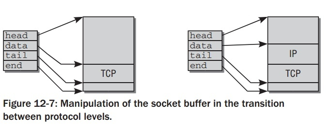

socket buffer结构解析
Table of Contents
socket buffer
当网络包被内核分析时,底层协议的数据被传送更高层.当数据传送时过程反过来.由不同协议产生的数据(包括头和负载)不断往下层传递直到它们最终被发送.因为这些操作的速度对于网络层的表现至关重要,内核使用一个特定的结构叫
socket buffer ,定义如下.Socket buffer被用来在网络实现层交换数据而 不用拷贝来或去数据包 –这显著获得速度收益.
/* include/linux/skbuff.h */ struct sk_buff { /* These two members must be first. */ struct sk_buff *next; struct sk_buff *prev; struct sock *sk; ktime_t tstamp; struct net_device *dev; struct dst_entry *dst; char cb[48]; unsigned int len, data_len; __u16 mac_len, hdr_len; union { __wsum csum; struct { __u16 csum_start; __u16 csum_offset; }; }; __u32 priority; __u8 local_df:1, cloned:1, ip_summed:2, nohdr:1, nfctinfo:3; __u8 pkt_type:3, fclone:2, ipvs_property:1; nf_trace:1; __be16 protocol; ... void (*destructor)(struct sk_buff *skb); ... int iif; ... sk_buff_data_t transport_header; sk_buff_data_t network_header; sk_buff_data_t mac_header; /* These elements must be at the end, see alloc_skb() for details. */ sk_buff_data_t tail; sk_buff_data_t end; unsigned char *head, *data; unsigned int truesize; atomic_t users; };
Using Socket Buffers
Socket buffers 由许多指针链接而成,如下图.图中假设32位系统,在64位机器上
socket buffer的结构稍微有点不同.

socket buffer的基本理念是通过操作不同的指针来添加或取出协议的头部.
- head和end指向数据缓存区域的start和end.
- data和tail指向实际协议数据区域的start和end.
mac_header指向MAC头的start,network_header和transport_header分别指向network和transport层的数据头.在32位的系统中,用来定义上面变量的数据类型sk_buff_data_t仅仅是一个简单的指针://<skbuff.h> typedef unsigned char *sk_buff_data_t;
使得kernel对于不同的协议类型都能使用socket buffer.简单的类型转换对于正确解析数据是必要的.比如一个socket buffer包含TCP包,TCP头如何从这个 socket buffer获得:
//<tcp.h> static inline struct tcphdr *tcp_hdr(const struct sk_buff *skb) { return (struct tcphdr *)skb_transport_header(skb); }
其他类似的转换的函数以
xxx_hdr形式.
因为对于网络层来说,低内存占用和高处理速度是必要的,所以对于 struct
sk_buff 来说,希望这个结构尽可能的小.在64位系统中,使用小技巧来节省一些空间. sk_buff_data_t 定义变成一个整型变量:
//<skbuff.h> typedef unsigned int sk_buff_data_t;
因为整型只需要指针内存的一半(4取代8字节)在一些系统架构上,那么这个结构节省20字节.data和head仍然是普通指针,其他 sk_buff_data_t 元素现在被解析成相对这些指针的偏移量.指向transport头的起始指针现在如下计算:
static inline unsigned char *skb_transport_header(const struct sk_buff *skb) { return skb->head + skb->transport_header; }
用这个方法是可行的,因为4字节足够表示4G的内存空间,而一个socket buffer永远不会超过这个大小.
data和tail使得数据在不同协议层间传递不用显示的拷贝操作,如下图.显示包如何处理.
当一个新包产生,TCP 层先在用户空间分配内存来存储包的数据(包括头和负载).比数据更多的足够的空间被预留使得底层能加入更多的头部数据.head和end指向预留空间的start和end,而TCP 数据在data和tail之间.
当socket buffer传递到IP 层,新的协议头要加入其中,其他指针不变,除了data 现在指向IP 头的起始处.同样的操作被之后的下层协议重复,直到完成的包被发送往网络.

Operations on socket buffers
看 include/linux/skbuff.h 中ocket buffer的一些常用的操作:
- allocate
sk_buffsk_buff有两部分组成:sk_buff(skb_buff本身描述符 和 其中data内从空间) 和skb_share_info.
alloc_skb调用了一个内部函数__alloc_skb(详见__alloc_skb). 并且:- fclone=0 : 不从fclone cache分配skb的头, 从head cache中.
- node=-1: NUMA不使用.
分配过程主要分为:
- 从cache中分配skb的本身描述符.
- 优化对cache的对齐,对数据大小做algin操作:
size = SKB_DATA_ALIGN(size);. - 分配data内存,包括size和
skb_shared_info大小:data = kmalloc_node_track_caller(size + sizeof(struct skb_shared_info), gfp_mask, node); - 对skb字段做一些初始化,其中
skb->truesize = size + sizeof(struct sk_buff);是总的大小. - 最后对
skb_shared_info做一些初始化.
static inline struct sk_buff *alloc_skb(unsigned int size, gfp_t priority) { return __alloc_skb(size, priority, 0, -1); } // example struct sk_buff *skbn; if ((skbn = alloc_skb(len, GFP_ATOMIC)) == NULL) return;
- free
sk_buffvoid kfree_skb(struct sk_buff *skb) { if (unlikely(!skb)) return; if (likely(atomic_read(&skb->users) == 1)) smp_rmb(); else if (likely(!atomic_dec_and_test(&skb->users))) return; __kfree_skb(skb); }
稍微分析一下:
- 若skb是NULL,直接返回.
- 如果
skb->users = 1, 那么说明没有其他代码在使用它,需要free,smp_rmb();是一个memory barrier, 防止内存乱序执行,防止的是多线程释放的情况,更多内容见浅谈Memory Reordering. atomic_dec_and_test(&skb->users)减1后再次判断引用是否为0,上面已经判断不是1了,这里是否必要再次判断?是需要的,if和else if间不是原子操作,其他进程在这之间可以插入free这个skb.所以原子减后需要再次判断是否能free.
在
__kfree_skb(skb);中release data时会判断!skb->cloned不是clone 的才会释放data空间. - copy of
sk_buffstruct sk_buff *skb_copy(const struct sk_buff *skb, gfp_t gfp_mask) { int headerlen = skb->data - skb->head; /* * Allocate the copy buffer */ struct sk_buff *n; #ifdef NET_SKBUFF_DATA_USES_OFFSET n = alloc_skb(skb->end + skb->data_len, gfp_mask); #else n = alloc_skb(skb->end - skb->head + skb->data_len, gfp_mask); #endif if (!n) return NULL; /* Set the data pointer */ skb_reserve(n, headerlen); /* Set the tail pointer and length */ skb_put(n, skb->len); if (skb_copy_bits(skb, -headerlen, n->head, headerlen + skb->len)) BUG(); copy_skb_header(n, skb); return n; }
拷贝整个
skb_buff结构,包括描述符和数据缓存区.//example struct sk_buff *skbn = skb_copy(skb, GFP_ATOMIC);
- clone of
sk_buffstruct sk_buff *skb_clone(struct sk_buff *skb, gfp_t gfp_mask) { struct sk_buff *n; n = skb + 1; if (skb->fclone == SKB_FCLONE_ORIG && n->fclone == SKB_FCLONE_UNAVAILABLE) { atomic_t *fclone_ref = (atomic_t *) (n + 1); n->fclone = SKB_FCLONE_CLONE; atomic_inc(fclone_ref); } else { n = kmem_cache_alloc(skbuff_head_cache, gfp_mask); if (!n) return NULL; n->fclone = SKB_FCLONE_UNAVAILABLE; } return __skb_clone(n, skb); }
clone和copy不一样,只生成新的
sk_buff的描述符结构,数据缓存区直接指向旧的,基本步骤:- 分配新的
sk_buff结构体. - 拷贝结构体内容.
atomic_set(&n->users, 1);:has a reference count of 1.skb->cloned = 1;:设置clone位.
- 分配新的
skb_putstatic inline unsigned char *skb_put(struct sk_buff *skb, unsigned int len) { unsigned char *tmp = skb_tail_pointer(skb); SKB_LINEAR_ASSERT(skb); skb->tail += len; skb->len += len; if (unlikely(skb->tail > skb->end)) skb_over_panic(skb, len, current_text_addr()); return tmp; }
扩展被使用的data区域.并返回准备存储data的起始位置的指针. example: 从ipbuf中拷贝16字节到 skb 中 data 的末尾处.
//example memcpy(skb_put(skb,16),ipbuf,16);
skb_tailroomandskb_headroom/** * skb_tailroom - bytes at buffer end */ static inline int skb_tailroom(const struct sk_buff *skb) { return skb_is_nonlinear(skb) ? 0 : skb->end - skb->tail; } static inline int skb_is_nonlinear(const struct sk_buff *skb) { return skb->data_len; } /** * skb_headroom - bytes at buffer head */ static inline unsigned int skb_headroom(const struct sk_buff *skb) { return skb->data - skb->head; }
skb_headroom返回data缓存区前部分的空闲大小.skb_tailroom而返回data缓存区后部分空闲大小.
skb->data_len是分片内存中数据长度,通过它来判断skb的数据缓存区是否线程,不是线性,skb 尾部空的内存大小为0, 若线性的, 尾部空的内存空间是skb->end - skb->tail.example: 把skb的data扩展到区域大小扩展到
min_frame_size.int min_frame_size = 62; if (skb->len < min_frame_size) { if ((skb->len + skb_tailroom(skb)) < min_frame_size) { skb2 = skb_copy_expand(skb, 0, min_frame_size - skb->truesize, GFP_ATOMIC); dev_kfree_skb(skb); if (skb2 == NULL) { priv->stats.tx_dropped++; return 0; } skb = skb2; } skb_put(skb, min_frame_size - skb->len); }
skb_realloc_headroom当skb的headroom大小不够时,可以用这个函数扩展其大小.它完成了两个功能:
- 扩展headroom.
- 创建新的skb结构,并复制之前的skb和部分它的数据.
- 返回的skb的reference count是1.
//example if (skb_headroom(skb) < len) { if ((skbn = skb_realloc_headroom(skb, len)) == NULL) { printk(KERN_CRIT "out of memory\n"); return NULL; } if (skb->sk != NULL) skb_set_owner_w(skbn, skb->sk); kfree_skb(skb); skb = skbn; }
skb_reservestatic inline void skb_reserve(struct sk_buff *skb, int len) { skb->data += len; skb->tail += len; }
- 通过减少tail的空间来增加headroom的大小.
- 它只允许对空buffer操作.
- transport/network/mac operation
sk_buff中有3个头结构的域:transport_header,network_header和mac_header.对于它们的操作类似,主要有:
skb_xx_header: 获取相应头的起始处.skb_reset_xx_header: 重新赋值为skb->data.skb_set_xx_header: 设置为skb->data + offset;.
Management Data of Socket Buffers
socket buffer结构体中主要被使用的元素:
dev
类型是 net_device , net_device 它代表一个网络设备。dev的作用与这个包是准备发出的包还是刚接收的包有关.当收到一个包时,设备驱动会把 sk_buff 的dev指针指向收到这个包的网络设备;当一个包被发送时,这个变量代表将要发送这个包的设备.
tstamp
存储包到达的时间.
sk
sk是将处理包的socket实例的指针.
dst
通过network实现层时,指示包如何route.使用这一特殊的结构 struct
dst_entry .
next 和 prev
next 和 prev 使得socket buffer链接在一个双向链表中.kernel标准的
list 实现并没有在这里使用,取而代之的是手动的版本. list头被用来实现
socket buffers的等待队列,它的结构如下:
struct sk_buff_head { /* These two members must be first. */ struct sk_buff *next; struct sk_buff *prev; __u32 qlen; spinlock_t lock; };

cloned
当被设置时，表示这个结构是另一个skbuff的克隆.
len, data_len 和 truesize
len: 当前协议数据包的长度.包括data中的缓冲数据和分片中的数据.data_len: 只包含分片中数据.truesize: 整个data的长度和sk_buff描述符的长度.
head, data, tail, end
head和end指向缓冲区的头部和尾部，而data和 tail指向实际数据的头部和尾部。
transport_header, network_header, 和 mac_header
这些是指向TCP/IP 各层协议头的指针：th指向L4(传输层)，nh指向L3(网络层)， mach指向L2(数据链路层)。
cb[48]
它是一个 control buffer. 在每一层,它都可以自由使用,所以把私有控制变量放在这个缓存空间.如果想在层与层之间使用,必须先做 skb_clone() .一般访问这个变量使用宏来实现以增强代码的可读性。比如TCP使用这个变量存储
tcp_skb_cb 结构。
#define TCP_SKB_CB(__skb) ((struct tcp_skb_cb *)&((__skb)->cb[0]))
使用实例:
// net/ipv4/tcp_output.c TCP_SKB_CB(buff)->seq = TCP_SKB_CB(skb)->seq + len; TCP_SKB_CB(buff)->end_seq = TCP_SKB_CB(skb)->end_seq; TCP_SKB_CB(skb)->end_seq = TCP_SKB_CB(buff)->seq;
pkt_type
这个变量表示帧的类型，分类是由L2的目的地址来决定的。这个值在网卡驱动程序中由函数 eth_type_trans 通过判断目的以太网地址来确定。
- 如果目的地址是FF:FF:FF:FF:FF:FF，则为广播地址,
pkt_type = PACKET_BROADCAST； - 如果最高位为1,则为组播地址.
pkt_type = PACKET_MULTICAST； - 如果目的mac地址跟本机mac地址不相等，则不是发给本机的数据报，
pkt_type = PACKET_OTHERHOST； - 否则就是缺省值
PACKET_HOST。
// include/linux/if_packet.h /* Packet types */ #define PACKET_HOST 0 /* To us */ #define PACKET_BROADCAST 1 /* To all */ #define PACKET_MULTICAST 2 /* To group */ #define PACKET_OTHERHOST 3 /* To someone else */ #define PACKET_OUTGOING 4 /* Outgoing of any type */
protocol
这个变量是高层协议从二层设备的角度所看到的协议。典型的协议包括IP，IPV6
和ARP。完整的列表在 include/linux/if_ether.h 中。由于每个协议都有自己的协议处理函数来处理接收到的包，因此，这个域被设备驱动用于通知上层调用哪个协议处理函数。详细见 netif_receive_skb 函数中,比对socket buffer的
protocol,传递到相应的协议处理函数中去.
reference
__alloc_skb
/** * __alloc_skb - allocate a network buffer * @size: size to allocate * @gfp_mask: allocation mask * @fclone: allocate from fclone cache instead of head cache * and allocate a cloned (child) skb * @node: numa node to allocate memory on */ struct sk_buff *__alloc_skb(unsigned int size, gfp_t gfp_mask, int fclone, int node) { struct kmem_cache *cache; struct skb_shared_info *shinfo; struct sk_buff *skb; u8 *data; cache = fclone ? skbuff_fclone_cache : skbuff_head_cache; /* Get the HEAD */ skb = kmem_cache_alloc_node(cache, gfp_mask & ~__GFP_DMA, node); if (!skb) goto out; size = SKB_DATA_ALIGN(size); data = kmalloc_node_track_caller(size + sizeof(struct skb_shared_info), gfp_mask, node); if (!data) goto nodata; /* * See comment in sk_buff definition, just before the 'tail' member */ memset(skb, 0, offsetof(struct sk_buff, tail)); skb->truesize = size + sizeof(struct sk_buff); atomic_set(&skb->users, 1); skb->head = data; skb->data = data; skb_reset_tail_pointer(skb); skb->end = skb->tail + size; /* make sure we initialize shinfo sequentially */ shinfo = skb_shinfo(skb); atomic_set(&shinfo->dataref, 1); shinfo->nr_frags = 0; shinfo->gso_size = 0; shinfo->gso_segs = 0; shinfo->gso_type = 0; shinfo->ip6_frag_id = 0; shinfo->frag_list = NULL; if (fclone) { struct sk_buff *child = skb + 1; atomic_t *fclone_ref = (atomic_t *) (child + 1); skb->fclone = SKB_FCLONE_ORIG; atomic_set(fclone_ref, 1); child->fclone = SKB_FCLONE_UNAVAILABLE; } out: return skb; nodata: kmem_cache_free(cache, skb); skb = NULL; goto out; }
__kfree_skb
void __kfree_skb(struct sk_buff *skb) { skb_release_all(skb); kfree_skbmem(skb); } static void skb_release_all(struct sk_buff *skb) { dst_release(skb->dst); #ifdef CONFIG_XFRM secpath_put(skb->sp); #endif if (skb->destructor) { WARN_ON(in_irq()); skb->destructor(skb); } #if defined(CONFIG_NF_CONNTRACK) || defined(CONFIG_NF_CONNTRACK_MODULE) nf_conntrack_put(skb->nfct); nf_conntrack_put_reasm(skb->nfct_reasm); #endif #ifdef CONFIG_BRIDGE_NETFILTER nf_bridge_put(skb->nf_bridge); #endif /* XXX: IS this still necessary? - JHS */ #ifdef CONFIG_NET_SCHED skb->tc_index = 0; #ifdef CONFIG_NET_CLS_ACT skb->tc_verd = 0; #endif #endif skb_release_data(skb); } static void skb_release_data(struct sk_buff *skb) { if (!skb->cloned || !atomic_sub_return(skb->nohdr ? (1 << SKB_DATAREF_SHIFT) + 1 : 1, &skb_shinfo(skb)->dataref)) { if (skb_shinfo(skb)->nr_frags) { int i; for (i = 0; i < skb_shinfo(skb)->nr_frags; i++) put_page(skb_shinfo(skb)->frags[i].page); } if (skb_shinfo(skb)->frag_list) skb_drop_fraglist(skb); kfree(skb->head); } }
skb_realloc_headroom
struct sk_buff *skb_realloc_headroom(struct sk_buff *skb, unsigned int headroom) { struct sk_buff *skb2; int delta = headroom - skb_headroom(skb); if (delta <= 0) skb2 = pskb_copy(skb, GFP_ATOMIC); else { skb2 = skb_clone(skb, GFP_ATOMIC); if (skb2 && pskb_expand_head(skb2, SKB_DATA_ALIGN(delta), 0, GFP_ATOMIC)) { kfree_skb(skb2); skb2 = NULL; } } return skb2; }
transport/network/mac
/* not NET_SKBUFF_DATA_USES_OFFSET */ static inline unsigned char *skb_transport_header(const struct sk_buff *skb) { return skb->transport_header; } static inline void skb_reset_transport_header(struct sk_buff *skb) { skb->transport_header = skb->data; } static inline void skb_set_transport_header(struct sk_buff *skb, const int offset) { skb->transport_header = skb->data + offset; } static inline unsigned char *skb_network_header(const struct sk_buff *skb) { return skb->network_header; } static inline void skb_reset_network_header(struct sk_buff *skb) { skb->network_header = skb->data; } static inline void skb_set_network_header(struct sk_buff *skb, const int offset) { skb->network_header = skb->data + offset; } static inline unsigned char *skb_mac_header(const struct sk_buff *skb) { return skb->mac_header; } static inline int skb_mac_header_was_set(const struct sk_buff *skb) { return skb->mac_header != NULL; } static inline void skb_reset_mac_header(struct sk_buff *skb) { skb->mac_header = skb->data; } static inline void skb_set_mac_header(struct sk_buff *skb, const int offset) { skb->mac_header = skb->data + offset; }